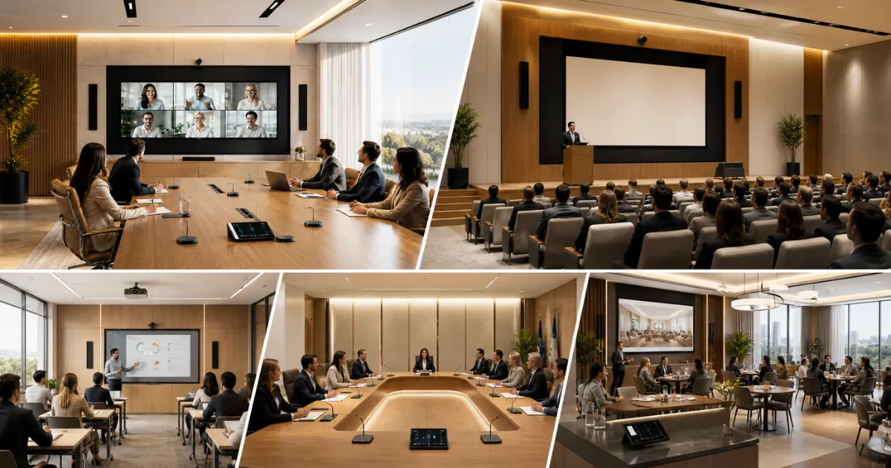
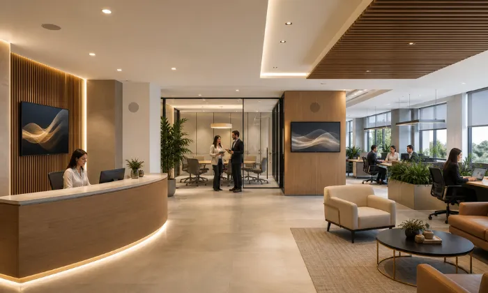

Audio y video corporativo e institucional para comunicación, colaboración y control.
Diseñamos e integramos sistemas audiovisuales para salas de juntas, auditorios, aulas, oficinas, gobierno y hospitalidad. Antes de seleccionar equipos revisamos dimensiones, uso, condiciones acústicas, cobertura, conectividad, plataformas, infraestructura y operación.
Iniciar Estudio de DiseñoTecnología que se integra al espacio y simplifica la operación
En entornos corporativos e institucionales, el audio y video no son accesorios: son herramientas de comunicación. Cuando una sala no se escucha bien, una cámara no encuadra correctamente, un micrófono falla o una pantalla no se ve con claridad, la reunión pierde efectividad.
En DG Audiosound coordinamos la integración audiovisual con la arquitectura y la infraestructura del proyecto: canalizaciones, puntos de red, ubicación de cámaras, micrófonos, pantallas, altavoces, racks y superficies de control se definen según el espacio y la operación prevista.
Sistemas Inestables
Eco, baja inteligibilidad, cortes de señal o conexiones inconsistentes pueden afectar el desarrollo normal de una reunión.
Desorden Tecnológico
Múltiples controles, adaptadores, cables expuestos o interfaces poco claras complican el uso cotidiano y la integración con el espacio.
Salas de Juntas
- Cámaras PTZ o de encuadre automático según la sala
- Microfonía de techo, mesa o inalámbrica según cobertura
- Pantallas, colaboración y control integrados según plataforma
La anatomía de un sistema audiovisual bien planificado
Un proyecto audiovisual requiere definir rutas de cableado, posiciones de equipos, conectividad, cobertura, alimentación, rack, control y crecimiento antes de la instalación. Explora los puntos del blueprint para ver cómo organizamos estas decisiones.

Colaboración con audio y video integrados
Definimos microfonía, cámaras, pantallas, altavoces, procesamiento y conectividad según la geometría de la sala, la posición de los participantes y las plataformas de colaboración utilizadas.
Por qué la planeación técnica importa
La planeación técnica permite definir compatibilidad, infraestructura, cobertura, operación, mantenimiento y capacidad de crecimiento antes de invertir en equipos.
Integración Arquitectónica
Planificamos rutas de cableado, canalizaciones, soportes y racks para reducir interferencias visuales y facilitar instalación y mantenimiento.
Operación Simplificada
Cuando el alcance lo requiere, integramos audio, video y funciones de sala en interfaces de control diseñadas para la operación cotidiana.
Inteligibilidad y Cobertura
Consideramos ruido ambiental, reverberación, patrón de cobertura, posición de micrófonos y altavoces para definir el sistema de audio adecuado al espacio.
Infraestructura Preparada para Crecer
Cuando el proyecto lo permite, dejamos capacidad en canalizaciones, cableado, red, rack y procesamiento para facilitar futuras ampliaciones.
Un Proceso Claro para Diseñar, Cotizar e Instalar
Un flujo estructurado para definir necesidades, infraestructura, equipos, instalación, programación y operación antes de cerrar el proyecto.
Contacto inicial
Nos escribes por WhatsApp y nos cuentas qué espacio quieres mejorar o qué idea tienes en mente.
Diagnóstico
Evaluamos fotos, medidas, planos, usuarios, plataformas, infraestructura, presupuesto y equipamiento actual.
Diseño de solución
Definimos cobertura, señal, cableado, conectividad, compatibilidad y equipos; después estructuramos la propuesta formal.
Instalación
Realizamos montaje, tendido y organización de cableado, conexión, configuración, pruebas y ajustes conforme al alcance aprobado.
Capacitación
Te explicamos de manera práctica cómo operar tu sistema fácilmente y resolver dudas cotidianas.
Explora los Espacios en Detalle
Cada tipo de espacio corporativo exige una especificación técnica de audio e imagen diferente. Selecciona la aplicación correspondiente para conocer su alcance y planos específicos.

Salas de Juntas
Videoconferencia, microfonía, cámaras, pantallas y control para reuniones presenciales e híbridas.
Ver Solución
Auditorios y Capacitación
Refuerzo sonoro, microfonía, proyección o displays de gran formato y control para presentaciones y capacitación.
Ver Solución
Aulas e Institutos
Aulas híbridas con audio, cámaras, pantallas y herramientas de colaboración seleccionadas según la dinámica de enseñanza.
Ver Solución
Hoteles y Hospitalidad
Audio ambiental, pantallas, distribución por zonas y control para lobbies, áreas comunes y espacios de hospitalidad.
Ver Solución
Gobierno y Cabildos
Sistemas de discusión, microfonía, cámaras, votación, grabación y transmisión según los requerimientos de la sala.
Ver Solución
Oficinas Corporativas
Audio distribuido, salas de colaboración, señalización y conectividad audiovisual para áreas de trabajo y espacios comunes.
Ver SoluciónMarcas profesionales para soluciones de alto rendimiento
Seleccionamos tecnología profesional según cobertura, interoperabilidad, conectividad, plataforma, operación y presupuesto de cada proyecto.
Consultas de Ingeniería Frecuentes
Diseñamos e integramos salas de juntas inteligentes, videoconferencia profesional con encuadre automático, sistemas de refuerzo de sonido para auditorios, aulas híbridas interactivas, voceo multizona y automatización para oficinas y empresas.
Conviene involucrar la integración audiovisual desde etapas tempranas de obra o remodelación. Así pueden definirse canalizaciones, puntos eléctricos y de red, posiciones de pantallas, cámaras, micrófonos, altavoces y espacio para racks antes de los acabados.
Podemos diseñar soluciones para plataformas como Microsoft Teams, Zoom, Google Meet o Cisco Webex. La compatibilidad final depende del hardware, licenciamiento, arquitectura de la sala y plataforma seleccionada para el proyecto.
Sí. En auditorios definimos el sistema a partir de dimensiones, altura, aforo, ruido, reverberación, cobertura y nivel requerido. Según el caso puede utilizarse refuerzo sonoro distribuido, arreglos de altavoces, microfonía y proyección o displays de gran formato.
Nos ayudan mucho las medidas de las salas, fotos, planos arquitectónicos si existen, el número de usuarios promedio por sala, las plataformas que utilizan y los objetivos de comunicación y control de la empresa.
Sí. La puesta en marcha puede incluir configuración, pruebas, ajustes y capacitación práctica para que el personal conozca las funciones y la operación básica del sistema instalado.
Cuéntanos tu proyecto
Completa el formulario y te contactamos por WhatsApp para revisar el espacio, usuarios, plataformas, infraestructura y objetivos del proyecto.
¿En qué podemos
ayudarte?
Podemos orientarte sobre salas de juntas, auditorios, aulas, oficinas, gobierno, hotelería, audio distribuido, video, colaboración y control. Escríbenos.
Solicita asesoría para tu proyecto
Completa el formulario y se abrirá WhatsApp con la información capturada. Incluye tipo de espacio, medidas aproximadas, número de usuarios, plataformas, planos y equipos existentes cuando los conozcas.